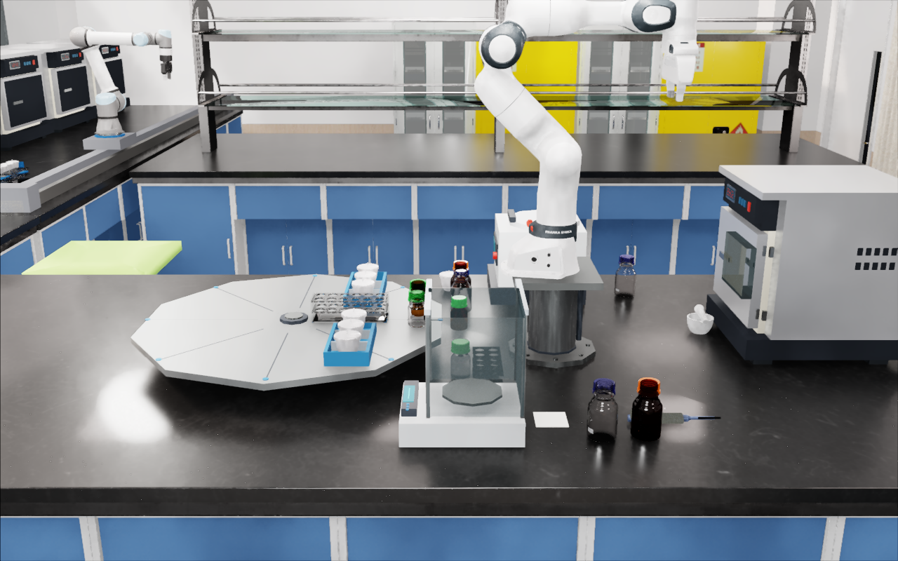
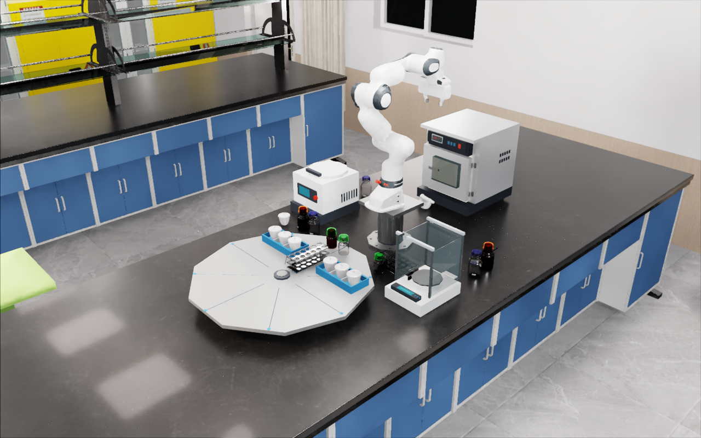
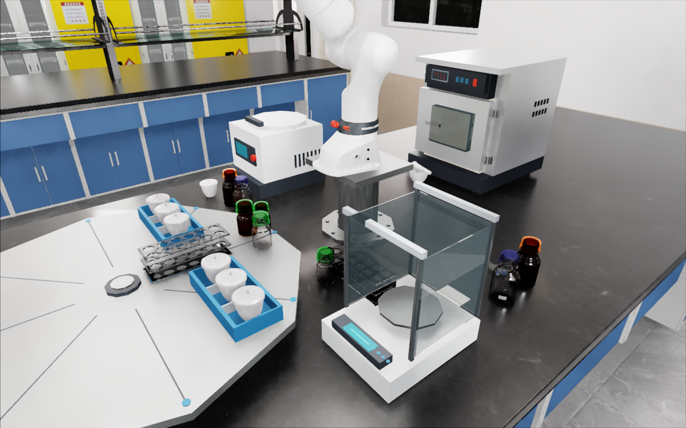
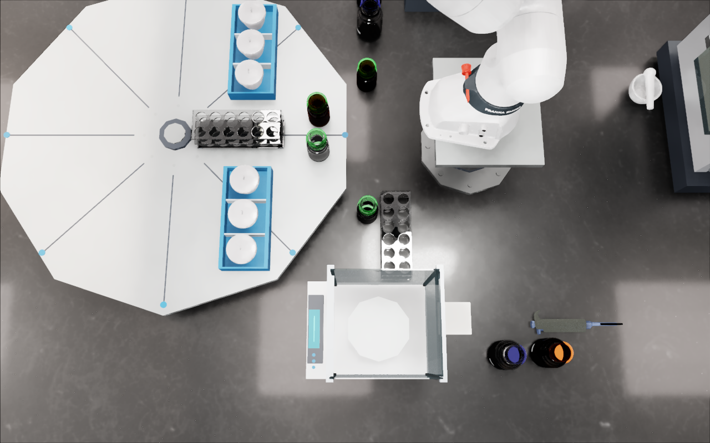
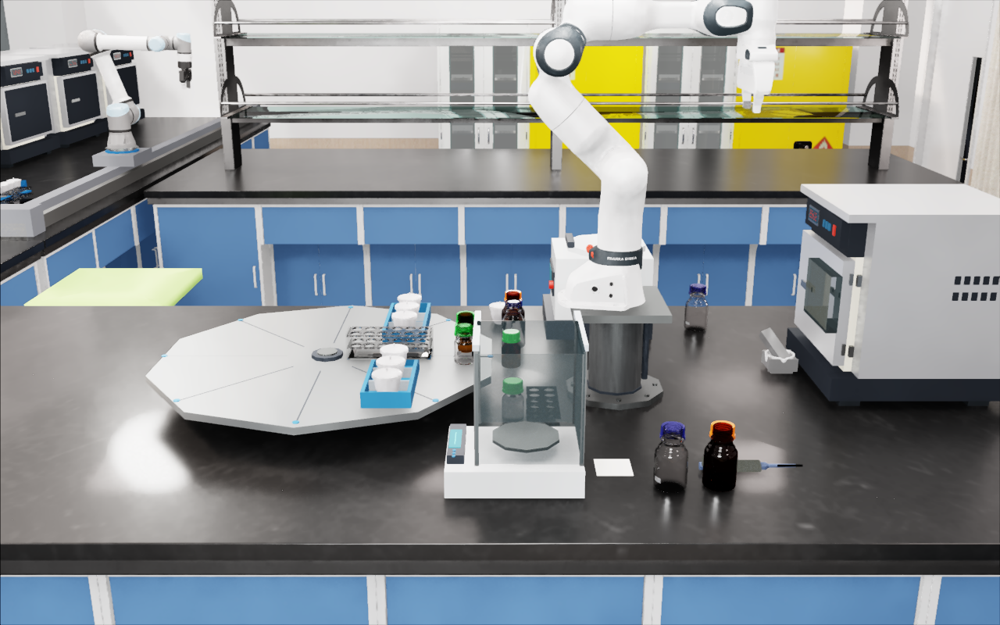
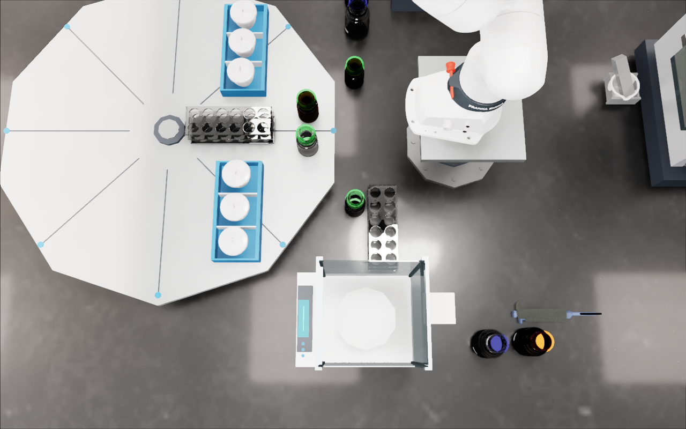
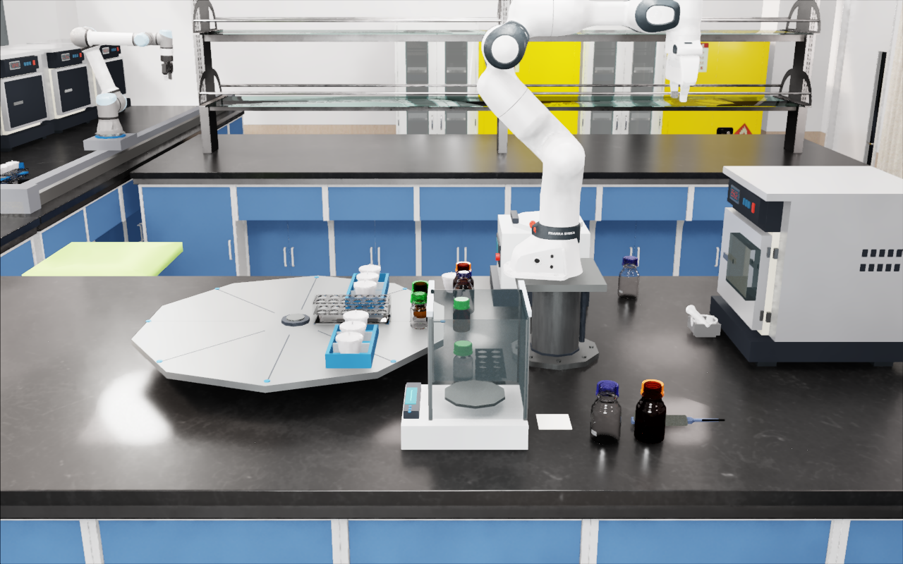
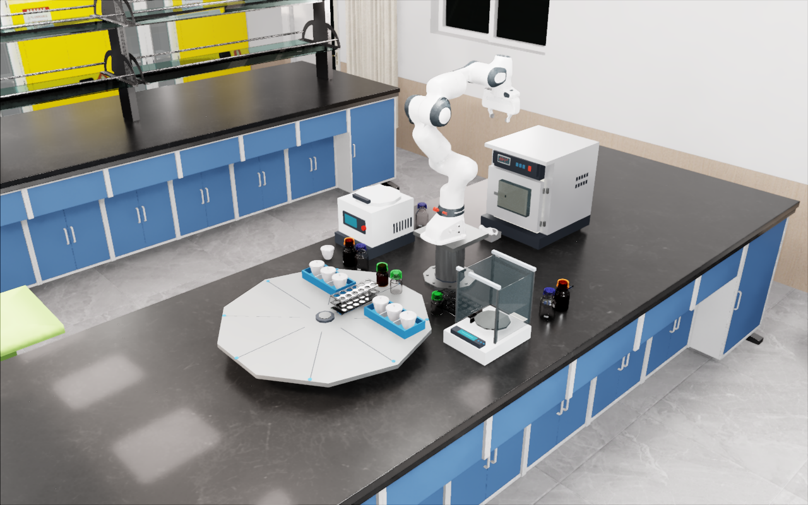
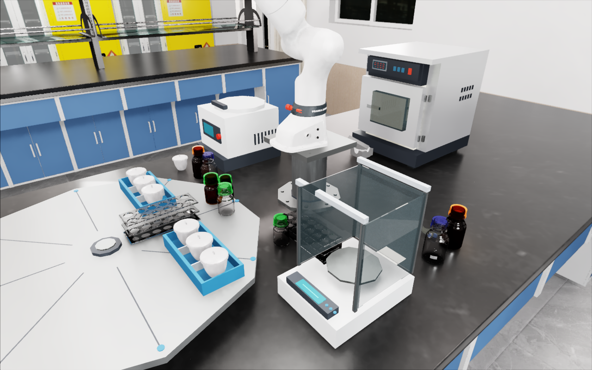

更新 2026-09-19 05:50 · 库 105 段 · 物理 PASS 72 / PARTIAL 32 / FAIL 1 · 严格门完整准入 0 · 总视频 8 条 · 失败 / 对照 run 视频 17 条
← 看板第 1b 节（表格版） · 已登记片段逐段页（起止帧 + 完整审计表） · 三维回放查看器
| 编号 | 要做什么 | 完成标准 | 负责 | 状态 / 证据 |
|---|---|---|---|---|
| D01 | 相机机位重做 四机位（正面、侧面、正上方俯视、腕部）按各站机械臂 base_link / tool0 的 USD 位姿计算，不手摆；正面正对机械臂、侧面拉近到工作区、俯视在工作区中心正上方垂直向下、腕部看得见两指垫与被夹物。 | 每站一份相机位姿文件 + 每个动作起始帧四机位截图，截图里机械臂、被操作物、目标位三者都在画面里；面板上能看到。 | agent 1 / agent 2 / agent 3 | 进行中 agent 1：GPU5 跑 A 站 FR3 base_link 相机运行时回放 A_camera_runtime_v3（10 阶段 + 起始帧）；agent 2：5090 计算卡跑 vial_shaker 候选相机；agent 3：B 站未开始 |
| D02 | Astra 输入补全 Astra 试次每一步输入：四机位 + 腕部图像；被操作物 id、位姿、尺寸 bbox、状态（开关 / 空满 / 槽位）；目标位姿与区域；机械臂关节角、TCP 位姿、夹爪开度；本任务分步说明。纯 RGB 试次不再做。 | Astra 入口的观测打包函数含上述全部字段，并有一条试次日志能逐字段看到。 | agent 1（工具链 / Astra 入口） | 未开始 |
| D03 | 每个动作的分步说明 3–8 步中文：起点、抓什么、放哪里、终态。面板已有监督写的初版，各 agent 按实际计划校正。 | 每个动作的派生计划目录里有 steps_zh.md，与面板一致。 | agent 1 / agent 2 / agent 3 | 进行中 面板初版 25 条；agent 校正版未到 |
| D04 | 总视频 + 阶段标注 每条 episode 导出完整站位相机视频，并写 subop_phases.json（每阶段起止 tick）；新 run 一律附带。 | 每个有 run 的动作在面板有总视频且阶段可点击；已有 8 条。 | agent 1 / agent 2 / agent 3 | 进行中 面板 8 条总视频 49 阶段；新 run 需附 subop_phases.json |
| D05 | 验收门改 demo 向并回算 任务完成 + 无穿模（原始负分离 tick=0）+ 有视频；净空阈值 5 mm → 0 mm；取消 20 mm 落点、5 mm 释放门、逐 tick 净空通道、可见性统计。subop_audit.py / verify_registration.py 加 --gate demo，回算 105 段，新字段 qualified_demo / demo_reasons，不改严格字段。 | 105 段都有 qualified_demo；导师复核脚本没把旧严格条件混进 demo 门；面板按 demo 门重标。 | agent 1 → 导师复核 | 进行中（有缺陷） 首次回算 59/105 通过，但导师核出仍继承 20 mm 落点门（A-37 反例）、verify --gate demo 第 12 段 TypeError；agent 1 修正中；C-14..19 应称 vial_2 回收 |
| D06 | 试剂瓶资产修正 绿色瓶盖与透明瓶身明显不匹配，修正瓶资产（盖与瓶身材质 / 几何一致），与 S3 资产包对齐。 | 新瓶资产入包，四机位截图里盖与瓶身匹配。 | agent 1 提 REQUEST → 高靖侧「GOAI继续」执行 | 进行中（请求已提） agent 1 已留 _shared/inbox_ops/REQUEST_S3_GREEN_CAP_MISMATCH_20260919/REQUEST.md；高靖侧「GOAI继续」已在处理 |
| D07 | stock 旁留出空间 把储液架旁未用到的离心机等设备移走，做布局派生包记录，再排 stock_1..4。 | 派生布局包 + 四机位截图显示空间，stock 四瓶至少一瓶按 demo 门通过登记。 | agent 1 | 进行中 派生布局包 _shared/inbox_ops/WORKBENCH23_STOCK_CLEARANCE_LAYOUT_20260919（离心机代理移出 stock 架包络、瓶根高度改实测支撑高度，CPU 候选）；GPU6 跑 stock_clearance_v3c 静置 |
| D08 | 称量纸夹取方式 称量纸放台沿并露出一部分，夹爪夹露出部分。 | 有候选计划 + 一条按 demo 门通过的 run。 | agent 1 | 未开始 |
| D09 | 研钵 / 研杵布局 R4 用发货资产重新落定到静止 → 冻结 → 静置门（建议 ≤ 5 mm / ≤ 5°，待用户确认），报告写资产 SHA 与计划 SHA，新建 R4 封包。 | R4 封包通过导师核验并接入 5051。 | agent 1 → 导师核验 | 待导师核验 R4 包已封 _shared/inbox_ops/WORKBENCH23_T3_T5_LAYOUT_20260919_R4_REBIND_20260919（20 文件，SHA 376f4621…）；静置门用发货资产 pestle_r3.usda（SHA 0cc12454…）跑：5 s、负分离 0、位移 0.249 mm、转角 0.966°，计划 SHA 99927bdc…；导师 07:58 起核验 |
| D10 | 已通过动作按 demo 门放行接入 tray_load（含 B-08 4.795 mm）、precursor 1–4 取放、小瓶 2 上天平在 demo 门下整体放行，接入 5051 面板。 | 5051 显示这些动作为 demo 通过。 | agent 1 回算 → 导师 → 「代码-串联流程」接入 | 未开始（等 D05 修正） |
| D11 | 出炉退出路线 第 7 次 run 出炉抓取已过，回架位的高位偏航段炉门内衬 ↔ 腕 2 预测穿透 1.33 mm 是真实几何问题；改退出路线（先沿 +Y 退出炉口再转向，或降低偏航）。 | 一条完整 装炉 → 支撑 → 出炉 → 回架位 episode 按 demo 门通过并登记 SUBOP-B-09 起。 | agent 3 | 进行中 第 7 次 run 失败已固化：wrist_2 ↔ furnace_4 门内衬预测穿透 1.328 mm，1475 帧，穿透 tick 0，未放回释放；退出路线修改未起跑，GPU1 空闲 |
| D12 | 机械臂开炉门 炉门不再由电机自动开，新增动作：UR5e_B 抓把手开炉门到位。 | 可达性方案 + 一条 demo 门通过的 run。 | agent 3 | 未开始 |
| D13 | 机械臂开柜门（C 站） C 站的门由机械臂开。需用户确认是 XRD 滑窗还是干燥箱门；先对两扇都做可达性分析。 | 用户确认后一条 demo 门通过的 run。 | agent 2（待用户指定哪扇门） | 待用户确认 XRD 滑窗还是干燥箱门 |
| D14 | B 站 10–13 并行开工 tray_load 释放撤离段重采、rail_furnace、rail_park、跨站交接位各出候选与四机位截图，分卡跑。 | 四项各有候选计划与至少一条 run。 | agent 3 | 进行中（评审） rail_furnace / rail_park 旧证据 I013/I015/I016 不满足全轨迹逐对门（plans_agent3/rail_evidence_review.md）；释放段重采、交接位未起 |
| D15 | C 站试管架摆整齐 三个试管架整齐摆放（布局派生包记录）。 | 四机位截图显示整齐排列，后续 run 用新布局。 | agent 2 | 未开始 |
| D16 | capper 放行释放 seq13 的 4.457 mm 释放净空在 demo 门（0 mm）下放行，重跑完成释放并登记 SUBOP-C-20 起。 | 一条 demo 门通过的 capper run 登记。 | agent 2 | 进行中 mainskill GPU0 跑 capper DEMO 阈值 0（run 20260918T231819_16_a100gpu0），结束后紧凑归档登记 |
| D17 | holder_prep R11 自碰撞 / 环境预检阈值改 0 mm（只拒实际穿透）后重跑；R10 的 1.903 mm 预测净空应放行。 | 一条 demo 门通过的 holder_prep run 登记。 | agent 2 | 进行中 mainskill GPU3 在跑（12.5 GB / 100%），待 agent 2 写明是否 R11 |
| D18 | holder_store 复审 / R3 R2 的 41 mm 位置误差不再单独致败：看样品架是否落入槽位并稳定；不行再上 R3（降携行速度）。 | 一条 demo 门通过的 holder_store run 登记。 | agent 2 | 未开始 |
| D19 | C 站 18–22 五个搬运位并行 shaker / uncap_site / prep / recap_site / store 各出候选计划与四机位截图，一动作一卡。 | 五项各有候选与至少一条 run。 | agent 2 | 进行中 5090 计算卡跑 vial_shaker 候选（run 20260919T073527_801_5090compute），队列剩余 7 |
| D20 | 新服务器接入 root@115.190.90.101:2760：2× A100 80 GB 空闲、/personal_fast_storage 可写 567 TiB、根盘余 5.8 GB、驱动 535.129.03。跑金标准渲染 + PhysX 探针，通过后优先给 agent 2。 | 探针结论写入 _shared/remote_hosts/INVENTORY.md；通过则有一条 run 在其上完成。 | agent 3 | 已完成（探针级） a100-new 金标准探针 PASS：Vulkan 起来、torch CUDA 2 卡、PhysX GPU 12 步、320×240 视口非黑；证据 NAS subop_store/agent3/plans_agent3/new_host_probe/QUALIFICATION_a100-new.md；用 /personal_fast_storage 上已有的 isaacsim51 pip 环境；已分给 agent 2，尚无 run 在其上 |
| D21 | 算力用满 mainskill、5090 计算卡（GPU-828bb172，空闲 ≥ 24 GB 可共用）、新服务器全部用起来，一动作一卡，空卡不能等。 | 每轮巡检 nvidia-smi 里没有属于我们却空着的卡。 | agent 1 / agent 2 / agent 3 | 进行中（有空卡） 忙：mainskill GPU0/3/5/6、5090 计算卡；空：mainskill GPU1（agent 3）、a100-new 两张 A100（agent 2） |









数据：progress.json（subop_actions）· segments.json · failed_runs.json；原始库在 5090 /data/liyufeng/goai_workflows/subop_library/，失败 run 原件在 mainskill 与 NAS（路径见每条卡片）。